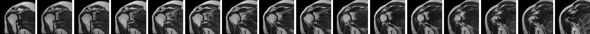
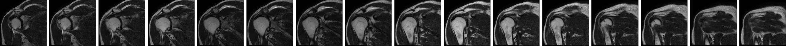
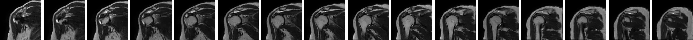

Ho-min Park
Assistant Professor, Texas Children's Hospital Data Center, Baylor College of Medicine, Houston
I build machine learning models for surgery, radiology and molecular biology that the clinician or biologist using them can inspect and question. I work as the engineering partner of surgeons and biologists, from model design to interpretability analysis.



Surgical video
Staging laparoscopy decides whether a patient with gastrointestinal cancer can go on to curative treatment, and that decision often depends on whether a small nodule on the peritoneum is metastasis. With surgeons at Ghent University Hospital I build models that read these videos, and methods that still work when the phase or lesion of interest appears in only a few frames.
Scroll sideways to see the whole figure.
A multimodal model for peritoneal lesions during staging laparoscopy
(a) An image model classifies lesions in intraoperative video frames. A second model uses morphologic features of the same lesions, scored by two expert surgeons. The two outputs are fused into one prediction of peritoneal metastasis or benign lesion.
(b) Discrimination on 67 patients. The fused model reached an AUC of 0.88, above the expert surgeons (0.78) and the best image-only model (0.72).
Tozzi F, Park HM, Mousavi SA, Van Liefferinge M, Moon D, Fadaei S, et al. International Journal of Surgery 112(1):373–383, 2026.
Scroll sideways to see the whole figure.
Test-time adaptation for rare surgical phases
(a) Some surgical phases fill less than 1% of a video. A frame classifier can separate these frames well and still miss the phase at the video level. We call this the coverage-gap paradox.
(b) The method adapts class prototypes on the unlabeled test video. The adaptive threshold in stage 3 is the core step, because a fixed confidence threshold leaves the rare-phase pseudo-label pool empty. Stages 4 and 5 ask an annotator for only five frames.
(c) Results on MultiBypass140 and Cataract-101 with one rare-labeled training video. The method was also evaluated on Cholec80.
Park HM, Tozzi F, De Muynck R, Kim N, Rashidian N, Willaert W, De Neve W, Vankerschaver J. Medical Image Computing and Computer Assisted Intervention (MICCAI 2026), Lecture Notes in Computer Science, Springer. In press.
Radiology and screening
In diagnostic imaging I care about what a model looked at and how to measure it. The rotator cuff work began with a shoulder MRI dataset and a diagnostic model, and continued with CAMscore, which ranks MRI slices by how much they contribute to a prediction.
Tap a figure to enlarge it.
Rotator cuff tears in shoulder MRI
(a) Normal rotator cuff, partial-thickness tear and full-thickness tear.
(b) The shoulder MRI dataset released with the MLHC 2020 paper. Partial-thickness tears are rare, so class imbalance is part of the problem.
(c) Interpretable diagnosis. Models trained on axial, coronal and sagittal series are fused into one prediction. CAMscore then ranks individual slices, and a plane importance analysis shows how much each series contributes.
(a, b) Kim M, Park H, Kim JY, Kim SH, Hoeke S, De Neve W. Machine Learning for Healthcare Conference, PMLR 126:292–308, 2020. (c) Park H, Yun I, Kim M, Nguyen KT, Van Messem A, De Neve W. Medical Imaging 2024: Computer-Aided Diagnosis, SPIE 12927:683–693.
Proteins and CRISPR
On the biology side I use structure prediction and docking to study CRISPR-Cas systems and the anti-CRISPR proteins that phages use to block them. Work with Hyunjin Shim and colleagues produced a public set of predicted anti-CRISPR structures and a docking service for crRNA and Cas protein pairs.
Tap a figure to enlarge it.
AlphaFold structures of anti-CRISPR proteins
Predicted structures of two anti-CRISPR proteins, Acr 0272 and Acr 0153, each shown alone and superimposed on its experimentally determined structure (PDB 6MCB chain C and 5Y6A chain A). Sequences came from anti-CRISPRdb and were grouped by how well each protein has been verified. The paper uses these structures to discuss how anti-CRISPR proteins could be developed as protein drugs.
Park HM, Park Y, Vankerschaver J, Van Messem A, De Neve W, Shim H. Pharmaceuticals 15(3):310, 2022.
Tap a figure to enlarge it.
CRISPR-Cas-Docker, a web service for crRNA and Cas protein docking
Users submit a crRNA and a Cas protein, either as experimental structures or as predicted ones (a 3D-predicted crRNA and an AlphaFold Cas protein). The service docks each pair with HDOCK, returns the top ten models with their scores, and uses machine learning to classify which crRNA and Cas pairs belong together when a genome carries several CRISPR arrays and Cas systems.
Park H, Won J, Park Y, Anzaku ET, Vankerschaver J, Van Messem A, De Neve W, Shim H. BMC Bioinformatics 24(1):167, 2023.
Scroll sideways to see the whole figure.
Which point mutations make useful augmentations for genomic data
Image models are often trained on flipped or cropped copies of their inputs, but most of those operations change the meaning of a DNA sequence. This study proposed codon substitutions in coding regions instead and tested them on translation initiation and splice site detection. Silent and missense mutations improved performance, while nonsense mutations and random mutations in non-coding regions generally degraded it. The codons shown are illustrative examples.
Lee H, Ozbulak U, Park H, Depuydt S, De Neve W, Vankerschaver J. BMC Bioinformatics 25(1):170, 2024.
Microscopy
Microplastics in seafood are usually identified by eye under a fluorescence microscope. MP-Net segments the particles automatically, and the annotation tool and image set we built for it are public.
Fluorescence
Bright field, same sample
Microplastics Annotation Package
Tap a figure to enlarge it.
MP-Net: segmentation of microplastics isolated from clams
(a) Particles isolated from clams are stained with Nile red and imaged under fluorescence. MP-Net segments each particle, and the masks give particle type and size.
(b) Stitched fluorescence and bright-field images of the same sample from the public image set.
(c) The annotation tool used to build the segmentation masks.
Park H, Park S, de Guzman MK, Baek JY, Cirkovic Velickovic T, Van Messem A, De Neve W. PLoS ONE 17(6):e0269449, 2022.
Physiological signals
Stress and emotion models combine video, audio, text and wearable sensor signals, so it is hard to tell what a prediction is based on. Our team took third place in MuSe-Stress 2022 and second place in MuSe-Personalisation 2023, and the journal paper that followed examines the stress models with SHAP values and attention weights.
Tap a figure to enlarge it.
Which signals drive a stress prediction
Pipeline for the MuSe-Stress 2022 task. Video, audio, text and physiological sensor signals are turned into features by two extractors, and models predict arousal and valence over time. The journal paper uses SHAP and attention to show which inputs each prediction depends on. Target uses include job interviews, public speaking, consultation and healthcare.
Park H, Kim G, Oh J, Van Messem A, De Neve W. IEEE Transactions on Affective Computing 15(1):1–17.
Teaching and mentoring
In 2021 I started the AI Vacation School at Ghent University Global Campus, an unpaid intensive program for undergraduates that runs in summer and winter. I wrote a 20-lecture curriculum that goes from regression and CNNs to transformers, diffusion models and SHAP, and released the slides and notebooks openly.
More than thirty students have taken part. Several became co-authors on the papers on this page, and alumni have gone on to graduate programs at KAIST, Seoul National University, UNIST, Ghent University and Scripps Research.
Tap a figure to enlarge it.
Student research posters
Research posters by AI Vacation School students on biomarker discovery for Parkinson's disease, rotator cuff tear diagnosis from MRI, heart disease diagnosis and hepatitis C prediction.
Center for Biosystems and Biotech Data Science, Ghent University Global Campus.
Contact
At Texas Children's Hospital I am building a group that pairs engineers with clinicians on pediatric and oncology problems. If you are a clinician with a question your data could answer, or a student who wants to work on one, please write to me.
- Ho-min.Park@bcm.edu
- Affiliation
- Texas Children's Hospital Data Center, Baylor College of Medicine, Houston, Texas
- Code
- github.com/powersimmani
github.com/HominParkBCM - Profiles
- Google Scholar, ORCID 0000-0001-9937-8617, LinkedIn
- Training
- Postdoctoral researcher, Ghent University Global Campus, 2025 to 2026
Ph.D. in Computer Science Engineering, Ghent University, 2025
M.S. in Computer Engineering, Ajou University, 2018
B.S. in Computer Science and Engineering, Ajou University, 2016